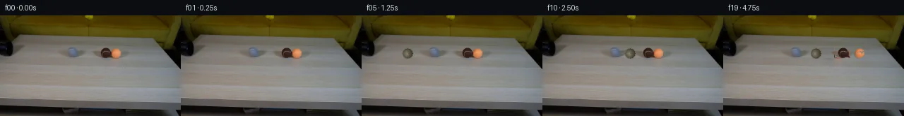

![首帧]()

Round 00
2026-11-05T04:43:23.072200+00:00像素候选变化代码 +312/−0inspection 更新
pixels 293ab7f8756783d5 · code df8502471253c697
查看本轮 generate.py 真实 diff
--- previous/generate.py
+++ current/generate.py
@@ -0,0 +1,312 @@
+#!/usr/bin/env python3
+"""PixelWorld-Text: Generate 20-frame animation of grey ball hitting brown ball.
+
+Method: Extract ball sprites from frame 0 with alpha masks, create a grey
+tennis ball sprite, then composite animated frames via per-pixel alpha
+blending and background inpainting. No external models or engines.
+"""
+import numpy as np
+from PIL import Image
+from pathlib import Path
+
+# ── Configuration ──────────────────────────────────────────────────
+CASE_DIR = Path(__file__).resolve().parent
+H, W = 144, 256
+N_FRAMES = 20
+FPS = 4
+
+# ── Load first frame ───────────────────────────────────────────────
+base = np.array(Image.open(CASE_DIR / "first_frame.png")).astype(np.float32)
+assert base.shape == (H, W, 3), f"Expected (144,256,3), got {base.shape}"
+
+# ── Background table reference (for inpainting) ────────────────────
+# Sample the table at each y-row, avoiding the ball region (x=130-180)
+# and the pipe region (x=0-20). Use left and right samples.
+bg_left = np.zeros((H, 3), dtype=np.float32)
+bg_right = np.zeros((H, 3), dtype=np.float32)
+for y in range(H):
+ bg_left[y] = base[y, 50:100].mean(axis=0)
+ bg_right[y] = base[y, 180:230].mean(axis=0)
+
+
+def inpaint_ball_region(frame, x1, x2, y1, y2):
+ """Fill a rectangular region with interpolated background."""
+ for y in range(max(0, y1), min(H, y2)):
+ left_color = bg_left[y]
+ right_color = bg_right[y]
+ for x in range(max(0, x1), min(W, x2)):
+ # Linear interpolation between left and right table samples
+ t = (x - 50) / (230 - 50) # normalize across table width
+ t = max(0, min(1, t))
+ bg_color = left_color * (1 - t) + right_color * t
+ # Add small noise to avoid flat areas
+ noise = np.random.normal(0, 2.0, 3)
+ frame[y, x] = np.clip(bg_color + noise, 0, 255)
+
+
+# ── Extract brown ball sprite ──────────────────────────────────────
+def extract_ball_sprite(arr, x_min, x_max, y_min, y_max, mask_fn):
+ """Extract a ball as RGBA sprite with alpha from mask function."""
+ pad = 2
+ sx1 = max(0, x_min - pad)
+ sx2 = min(W, x_max + pad + 1)
+ sy1 = max(0, y_min - pad)
+ sy2 = min(H, y_max + pad + 1)
+
+ sprite_h = sy2 - sy1
+ sprite_w = sx2 - sx1
+ sprite = np.zeros((sprite_h, sprite_w, 4), dtype=np.float32)
+
+ for ly, y in enumerate(range(sy1, sy2)):
+ for lx, x in enumerate(range(sx1, sx2)):
+ sprite[ly, lx, :3] = arr[y, x]
+ if mask_fn(arr[y, x]):
+ sprite[ly, lx, 3] = 255
+ # Soft edge: partial alpha for pixels near the mask boundary
+
+ # Expand alpha with soft edges
+ alpha = sprite[:, :, 3].copy()
+ for _ in range(2):
+ expanded = np.zeros_like(alpha)
+ for dy in [-1, 0, 1]:
+ for dx in [-1, 0, 1]:
+ rolled = np.roll(np.roll(alpha, dx, axis=1), dy, axis=0)
+ expanded = np.maximum(expanded, rolled * 0.3)
+ alpha = np.maximum(alpha, expanded)
+
+ sprite[:, :, 3] = alpha
+ return sprite, (sx1, sy1)
+
+
+def is_brown_ball(pixel):
+ """Identify brown ball pixels: significantly darker/different from table."""
+ r, g, b = pixel
+ # Brown ball has low blue, medium red, lower green than table
+ # Table at this y is around (115-125, 110-120, 105-118)
+ if b < 90 and r > 45 and g > 20:
+ if r < 160 and g < 150:
… diff truncated; 225 more lines …